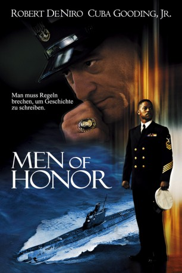
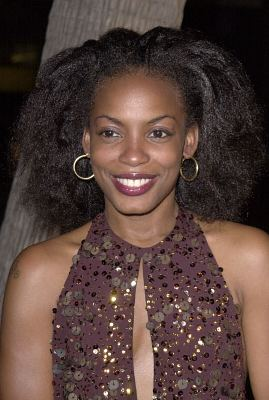
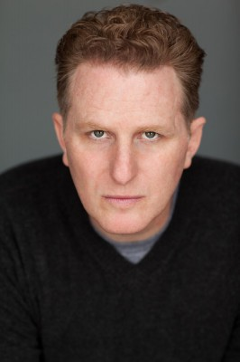
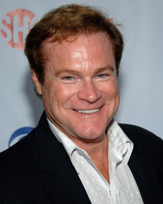
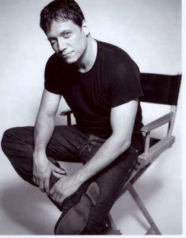
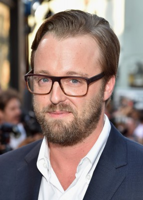
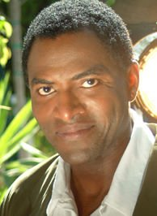
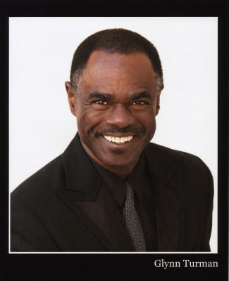
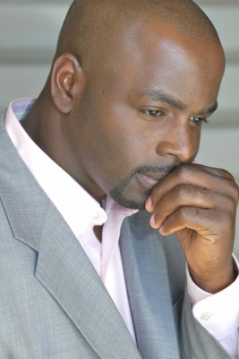
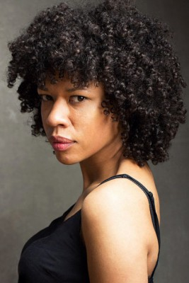

#4352 Men of Honor
 
 IMDB-Wertung: 7.2 / 10
IMDB-Wertung: 7.2 / 10  Tomatometer: 42
Tomatometer: 42  Metascore: 0
Metascore: 0 
Obwohl der Schwarze Carl Brashear in ärmsten Verhältnissen im Süden der USA heranwächst, hat er es sich in den Kopf gesetzt, einmal Taucher bei der US-Navy zu werden - im Amerika der fünfziger Jahre ein schier hoffnungsloses Unterfangen. Doch weder Rückschläge noch offene Anfeindungen können ihn von seinem Ziel abbringen. Da beginnt sein rassistischer Ausbilder, der seit einem Tauchunfall nicht mehr unter Wasser darf, seinen ganzen Frust an dem farbigen Schüler auszulassen. Für Carl hat damit der Leidensweg erst begonnen...
Jahr: 2000
Dauer: 128 Minuten
FSK: 12
Land: USA Studio: 20th Century FoxTonspuren: DTS - ,
Untertitel: Deutsch, Englisch,
Auflösung: 1080p (1920x820) Größe: 11673 MB
Genre: Biographie, Drama
Regisseur: George Tillman Jr.
Drehbuch: Nicholas Kazan
Soundtrack:
Darsteller:
 Robert De Niro als Master Chief Billy Sunday
Robert De Niro als Master Chief Billy Sunday Cuba Gooding Jr. als Chief Carl Brashear
Cuba Gooding Jr. als Chief Carl Brashear Charlize Theron als Gwen Sunday
Charlize Theron als Gwen Sunday-  Aunjanue Ellis als Jo
 Hal Holbrook als 'Mr. Pappy'
Hal Holbrook als 'Mr. Pappy'-  Michael Rapaport als GM1 Snowhill
 Powers Boothe als Captain Pullman
Powers Boothe als Captain Pullman-  David Keith als Captain Hartigan
-  Holt McCallany als MM1 Dylan Rourke
- David Conrad als Lt. / Cmdr. / Capt. Hanks
-  Joshua Leonard als PO2 Timothy Douglas Isert
-  Carl Lumbly als Mac Brashear
 Lonette McKee als Ella Brashear
Lonette McKee als Ella Brashear-  Glynn Turman als Chief Floyd
- Joshua Feinman als DuBoyce
- Theo Nicholas Pagones als FC Mellegrano
- Ryan Honey als Surveyor 2nd Yarmouth
- Chris Warren als Young Carl Brashear
-  Alimi Ballard als Coke
 Shawn Michael Howard als Junie
Shawn Michael Howard als Junie- Troy Lund als Blonde Gate SP
- Matt Dotson als Marine Guard at Hearing
- Richard Sanders als Donny Moor Bartender
- Henry Noble als Black Inductee
- Dennis Bateman als Navy Instructor
- Michelle Guthrie als Therapist
- Scott Kraft als Ropeleski
- Tim Monsion als News Reporter
 Dulé Hill als Red Tail
Dulé Hill als Red Tail- John Polce als Hospital Security
 Robert Blanche als Shore Patrolman
Robert Blanche als Shore Patrolman- Chad W. Smathers als Drowning Boy
- Wayne Morse als Navy Orderly
 Leon Russom als Decker
Leon Russom als Decker- Randy Flagler als Bomb Chief
-  Ayanna Berkshire als Jazz Club Dancer , uncredited
- Carl Brashear als Nightclub Patron , uncredited
- Heath Centazzo als Navy Deck Hand , uncredited
- Mark Correy als Hero Ensign , uncredited
- Jayson Crittenden als Naval Recruit , uncredited
- Ethan Hoyt als Naval Officer , uncredited
- Chris Krueger als Deep Sea Diver , uncredited
- Koko Masako als Cigarette Girl , uncredited
 Tyler Posey als Boy , uncredited
Tyler Posey als Boy , uncredited- Geno Romo als Diver , uncredited
- Laurie Slater als Ballroom Dancer , uncredited
- Brad Everett Young als Shocked Navy Diver , uncredited
- Dennis Troutman als Boots
- Lester B. Hanson als Admiral Yon
- Jack Frazier als Rear Admiral French
Datei: X:\2000\Men of Honor (2000, FSK12, 1920x820).mkv seit 12.09.2016
Festplatte: HD 1996-2002
 Es gibt insgesamt 82 Filme in der Gruppe '2000'
Es gibt insgesamt 82 Filme in der Gruppe '2000'